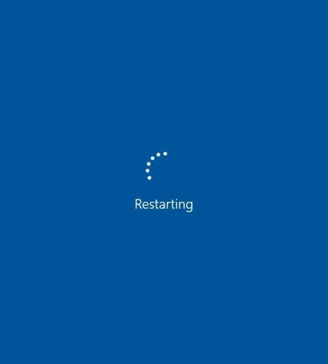
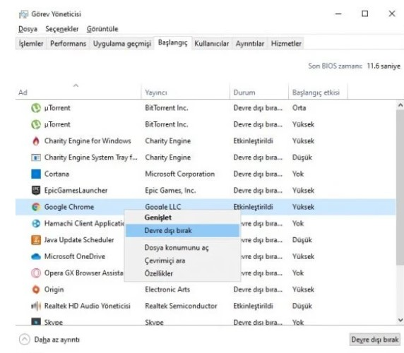
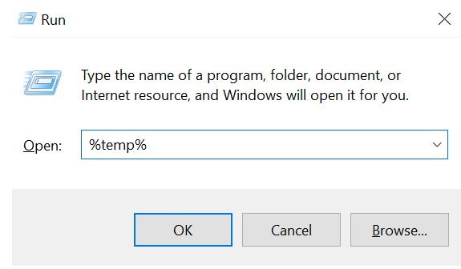
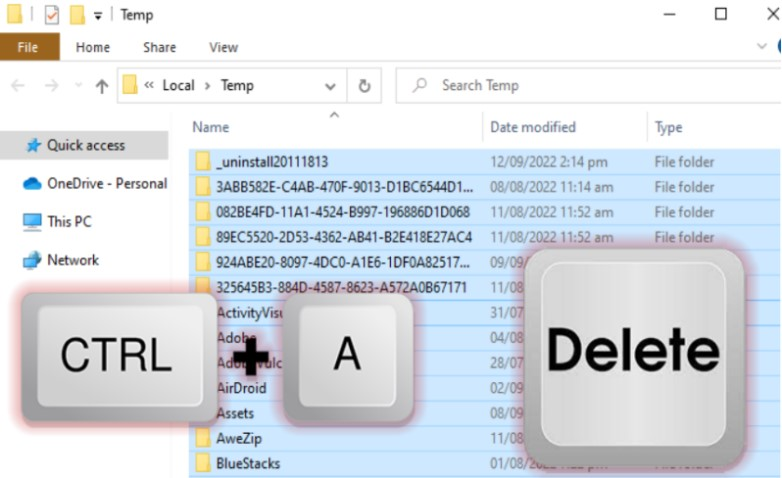
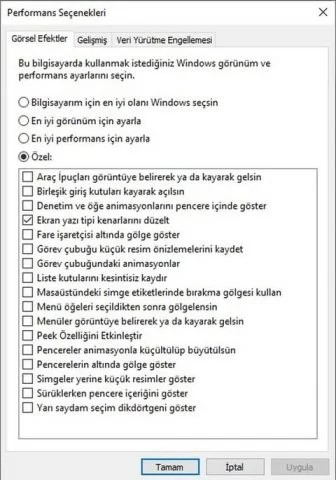

Bilgisayarınızı Yeniden Başlatını Gör
Açılışta Başlatılan Programları Devre Dışı Bırakını Gör
Windows Geçici (Temp) Dosyaları Silmeyi Gör
En Performanslı Sistem Ayarlarını Gör
1- Bilgisayarınızı Yeniden Başlatın
1- Bu biraz anlamsız gibi görünebilir ancak bilgisayarınızı düzenli olarak yeniden başlatmak sisteminizin hızlanmasına yardımcı olabilir. Birçok kişi bilgisayarını kapatmak yerine Uyku moduna getirerek hiç yeniden başlatmadan haftalarca çalıştırmaktadır. Bu durum bilgisayarınızın belleğinde programların ve iş yüklerinin birikmesine, buna bağlı olarak da programların başlatılması ve dosyalara erişim gibi günlük görevlerin yavaşlamasına neden olabilmektedir.
2- Açılışta Başlatılan Programları Devre Dışı Bırakın
Oturum açmanıza takiben arka planda belki de yüzü aşkın program devir daim yapmaya başlar. Peki gerek duymadığınız programları kapatmaya ne dersiniz? Hem RAM kullanımını azaltın hem de bilgisayarınızı hızlandırın. Görev yöneticisini çalıştırın. Bunun için: CTRL+SHIFT+ESC tuşlarına aynı anda basın. Tuşlarınızdan birisinde sorun varsa arama kısmına Görev Yöneticisi yazarak da açabilirsiniz. Bir diğer alternatif ise CTRL+ALT+DEL tuşlarına basmak, açılan mavi ekrandan Görev Yöneticisi’ni açmaktır.
Açtıktan sonra bir sürü sekme göreceksiniz. Bizim şimdilik Başlangıç sekmesiyle işimiz var. Mesela Google Chrome kullanıyorsanız (şu anda açık değilse) arka planda birkaç tane çalıştığını görmeniz olasıdır. Bunları kapatarak ciddi anlamda RAM tasarrufu elde edebilir ve hızlanma sağlayabilirsiniz.
Aynı zamanda sisteminizin başlamasıyla birlikte yüklü yazılımlar genel itibariyle otomatik başlarlar. Bu durum RAM tüketimi ve yavaşlamayı tetikleyen unsurların başında gelir. Yapacağınız birkaç basit ayarla otomatik açılmaları önleyebilirsiniz. Genelde otomatik başlayan programlara örnek: Steam, Slack, OneDrive, Google Drive, Yandex Disk ve Google Chrome gösterilebilir.

3- Windows Geçici (Temp) Dosyaları Silme
Temp dosyaları olarak da adlandırılan geçici dosyalar, işletim sisteminizin veya programınızın bilgisayarınızın daha hızlı ve sorunsuz çalışmasına yardımcı olmak için oluşturduğu dosyalardır. Windows geçici dosyaları can sıkıcı olabilir, çoğu zaman bilgisayarlar bunları otomatik olarak silmez ve zamanla birikebilir, bu nedenle disk alanınızda yer kaplar ve bazen sistemin yavaşlamasına neden olur.
Geçici dosyaları Windows 10'da manuel olarak ve tamamen silmenin ilk yolu, sistemin yerleşik Çalıştırma aracını kullanmaktır. Çalıştır'ı kullanarak Windows 10'da geçici dosyaları şu şekilde silebilirsiniz:
1-"Çalıştır" iletişim kutusunu açmak için Win + R tuşlarına birlikte basın.
2- %temp% girin ve "Tamam"a basın. Bu, Temp klasörünü açacaktır.

3-Belirli istenmeyen klasörleri ve geçici dosyaları seçin veya Ctrl + A tuşlarına aynı anda basarak tüm öğeleri seçin.
4-“Sil” tuşuna basın ve istendiğinde “Evet”i seçin. Bir Klasör Kullanımda penceresi açılırsa, seçili geçici dosyaları kaldırmaya devam etmek için Atla'yı tıklamanız yeterlidir.

4- En Performanslı Sistem Ayarları
NOT: BU ADIMI KİŞİSEL BİLGİSAYARINIZDA YAPABİLİRSİNİZ FAKAT KURUM BİLGİSAYARLARINDA BİLGİ İŞLEM İZNİ İSTEYECEKTİR
Windows 10’da bazı güzel özellikler var – gölgeler, animasyonlar ve görsel efektler. Hızlı, daha yeni bilgisayarlarda bunlar genellikle sistem performansını etkilemezler. Lakin daha yavaş ve daha eski bilgisayarlarda bu özellikleri kapatmanız performans artışı sağlayabilir. Ek olarak bu özellikleri kapatmak kolaydır. Windows 10 arama kutusuna “sysdm.cpl” yazın ve Enter tuşuna basın. Bu, Sistem Özellikleri iletişim kutusunu açacaktır. Gelişmiş sekmesine tıklayın ve Performans bölümünde Ayarlar’a erişin. Bu işlem sizi Performans Seçenekleri iletişim kutusuna ulaştırır.

Burada En iyi performans için ayarla > Uygula > Tamam
adımlarını takip edebilirsiniz